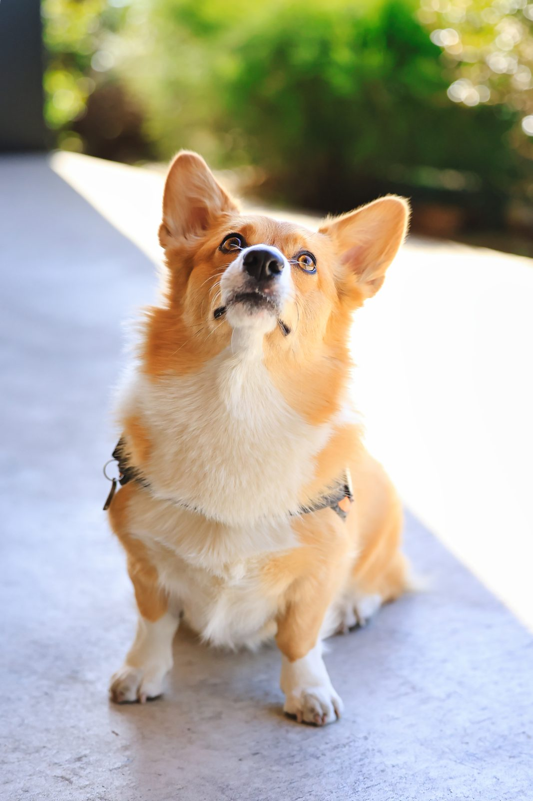

🐕
ルチル
Rutile
🏅 ひんやりコギさんぽ 公式レポート犬
🐾 🐾 🐾
| 犬種 | ウェルシュ・コーギー・ペンブローク |
|---|---|
| 誕生日 | 2022年9月3日（--歳） |
| 性別 | メス |
| 好きなもの | 人間／食べ物／浅瀬に入って歩くこと |
| 苦手なもの | 高いところ／吊り橋／目薬 |
📋 おしごと
管理人と一緒に水遊びスポットへ出かけて、「実際に犬が楽しめるか」を体を張って確かめる係。 浅瀬をぱしゃぱしゃ歩くのが得意分野です。 各スポットの訪問記録にある「犬の様子」や地面温度の実測は、ルチルとの現地調査の記録です。
※吊り橋のあるスポットのレポートは、本犬の強い希望により管理人が単独で確認しています。